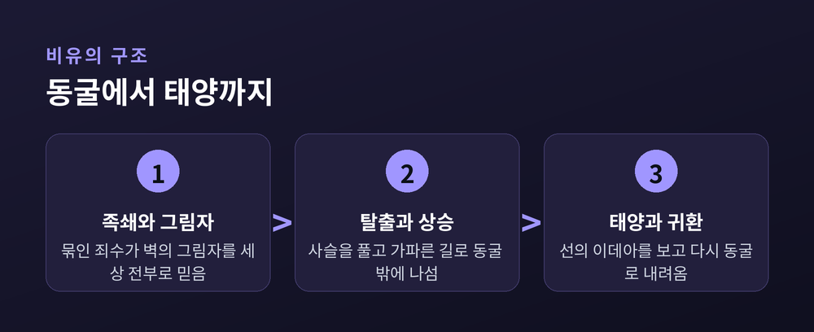
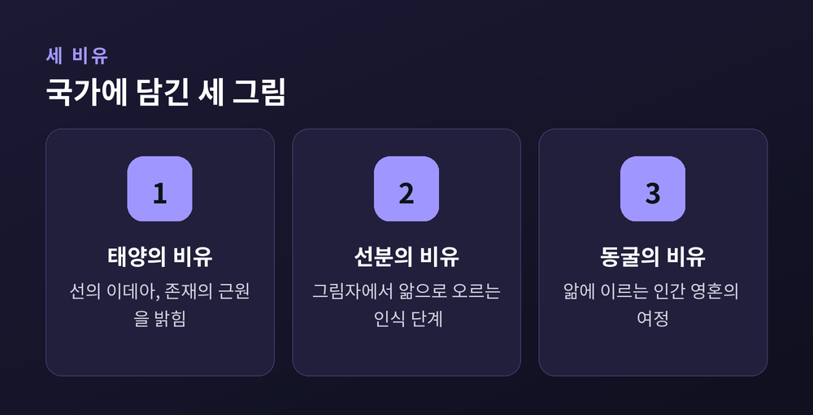
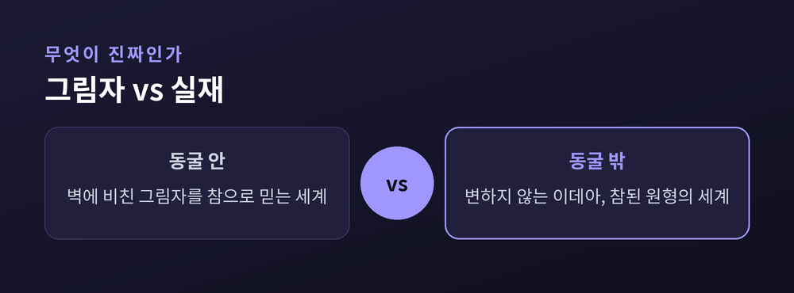

그림자 너머 진짜 세계로
이번 글에서는 플라톤의 동굴의 비유를 정리해 보겠습니다. 『국가』 제7권에 나오는 이 짧은 이야기는 이천 년이 넘도록 사람들을 붙들어 왔습니다. 우리가 보는 것이 과연 진짜인가, 라는 물음이 그 안에 담겨 있기 때문입니다.
한 동굴을 떠올려 봅니다. 사람들이 어릴 적부터 목과 손발이 묶인 채 벽만 바라보고 있습니다. 뒤로는 불이 타오르고, 불과 사람들 사이에서 누군가가 인형과 도구를 들고 지나갑니다.
죄수들이 볼 수 있는 것은 벽에 비친 그림자뿐입니다. 그들은 그 그림자를 세상의 전부라 여깁니다. 그림자가 지나가면 사물이 지나갔다고 믿고, 소리가 울리면 그림자가 말했다고 생각합니다.
플라톤은 이 장면이 바로 우리의 처지라고 말합니다. 우리가 눈으로 보는 세계는 참된 것의 그림자에 지나지 않는다는 것입니다.

이제 한 사람이 사슬에서 풀려납니다. 몸을 돌려 불을 마주하자 눈이 부십니다. 익숙한 그림자보다 오히려 실물이 더 낯설고 고통스럽습니다.
동굴 밖으로 끌려 나오는 길은 가파릅니다. 햇빛 아래에서 그는 처음에 아무것도 보지 못합니다. 먼저 물에 비친 그림자를 보고, 다음에 사물을 보고, 마침내 태양을 올려다봅니다.
이 태양이 플라톤이 말한 '선(善)의 이데아'입니다. 모든 것을 보이게 하고 자라게 하는 근원입니다. 여기서 이데아론이 모습을 드러냅니다. 우리가 감각으로 만나는 개별 사물 너머에, 변하지 않는 참된 원형이 있다는 생각입니다.
플라톤은 이 상승을 교육에 빗댑니다. 흥미로운 것은 그가 교육을 지식의 주입으로 보지 않았다는 점입니다.
없던 시력을 눈에 넣어 주는 일이 아닙니다. 이미 있는 눈을 올바른 쪽으로 돌려세우는 일입니다. 그는 이것을 영혼의 '전향(periagoge)'이라 불렀습니다. 어둠을 향하던 영혼을 빛을 향해 통째로 돌리는 방향 전환입니다.
동굴의 비유는 홀로 서 있지 않습니다. 앞선 제6권의 '태양의 비유', '선분의 비유'와 하나로 이어집니다. 태양의 비유는 존재의 근원을, 선분의 비유는 앎의 단계를, 동굴의 비유는 그 앎에 이르는 인간의 여정을 그립니다. 세 그림이 같은 구조를 다른 각도에서 비춥니다.

이야기는 밖에서 끝나지 않습니다. 진리를 본 사람은 동굴로 돌아와야 합니다.
돌아온 그의 눈은 어둠에 적응하지 못해 오히려 더듬거립니다. 남은 죄수들은 그런 그를 비웃습니다. 밖에 나갔다가 눈만 버리고 왔다고 여깁니다. 진실을 전하려는 그를 그들은 위협으로 받아들입니다.
플라톤은 여기서 철인정치를 말합니다. 선의 이데아를 본 자만이 나라를 다스릴 자격이 있다는 것입니다. 다만 그 사람은 홀로 빛 속에 머물지 못합니다. 배운 자에게는 어둠으로 되돌아가 함께 걸을 책임이 따릅니다.
이 비유는 오늘도 낡지 않았습니다. 알고리즘이 골라 준 화면을 세상 전부로 믿는 우리 역시, 어쩌면 저마다의 동굴에 앉아 있는지도 모릅니다. 예전엔 벽에 비친 그림자였고, 지금은 손안의 화면일 뿐입니다.

정리하면 이렇습니다. 동굴의 비유는 무엇이 진짜인지 묻고, 그 진짜를 향해 영혼을 돌려세우라 청합니다.
— 진리는 눈에 담아 주는 것이 아니라, 스스로 몸을 돌려 마주하는 것입니다.
내가 지금 보고 있는 것이 그림자는 아닌지, 오늘 한 번쯤 뒤를 돌아본다면 어떨까요.